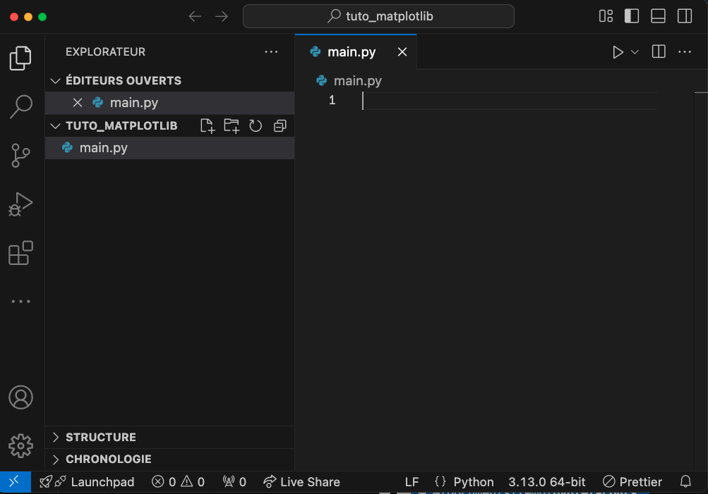
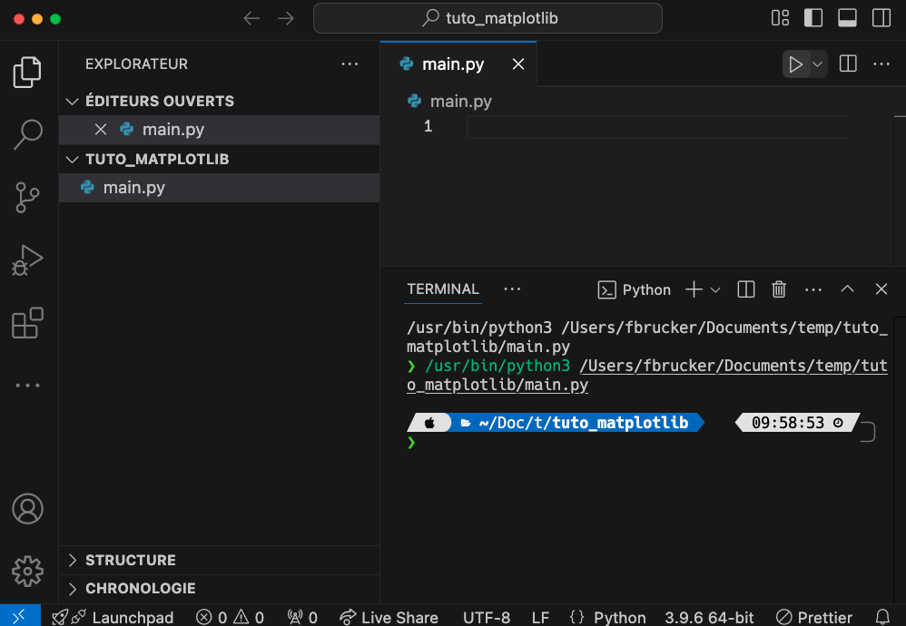
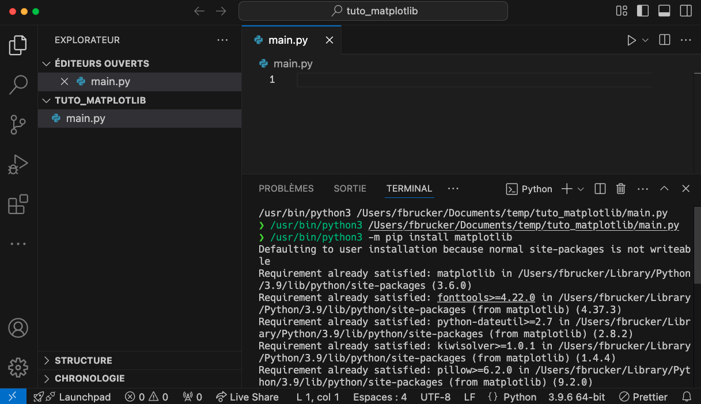

Installer des modules python
Nous allons montrer ici comment installer des modules à un interpréteur python. Nous prendrons ici l'exemple d'un projet avec vscode et de l'utilisation de son terminal, mais la méthode sera générale.
Il vous faudra exécuter des commandes via le terminal. Windows et macos n'aiment pas trop ça, il vous faudra explicitement autoriser à le faire.
sous Windows
Il faut vous permettre d'exécuter des scripts.
Script execution policy sous windows.
Pour la connaître :
Get-ExecutionPolicyPour la modifier :
Set-ExecutionPolicy Unrestrictedsous Macos
Il faut vous permettre d;ajouter des modules au programme python du système : il vous faut ajouter le paramètre --break-system-packages à toute commande d'installation avec pip.
Le module pip
pip est le Python Installer Package, c'est un module permettant d'installer d'autres modules. Il existe un multitude de modules python permettant de réaliser presque toutes les opérations que l'on souhaite. Citons par exemple :
- traitement des images avec pillow
- outils numériques avec numpy
- graphiques avec matplotlib ou seaborn
- analyse des données avec pandas
- musique avec librosa
- serveur web avec flask ou fastapi
- ...
Il existe d'autres méthodes pour installer des modules, mais la technique que nous montrons ici à le mérite de tout le temps fonctionner.
Pour installer un module avec python, il faut taper la commande :
<nom du programme python> -m pip install <nom du module à installer>Où :
<nom du programme python>est l'interpréteur python pour lequel on veut installer un package, c'est à dire la première partie de la ligne de commande écrite par vscode. Chez moi c'est :/usr/bin/python3. Chez vous c'est peut-être justepython(le plus probable).<nom du module à installer>est le nom du module à installer.
Cette ligne se comprend ainsi : pour mon python (<nom du programme python>), je veux utiliser le module pip (-m pip) avec les paramètres install <nom du module à installer> (on veut installer le module s'appelant <nom du module à installer>)
Un module est toujours installé pour un interpréteur particulier. Si vous avez plusieurs interpréteurs, le module ne sera installé que pour celui correspondant au <nom du programme python>
Si je veux installer le module matplotlib par exemple, ma ligne de commande à taper dans le terminal vscode sera :
/usr/bin/python3 -m pip install matplotlibPour vous, ce sera peut-être différent car le <nom du programme python> sera différent. Pour connaître le nom du programme python à utiliser et trouver un terminal, vous pouvez utiliser ce qu'on a vue dans la partie sur l'éditeur vscode.
Exemple : installation du module matplotlib
Supposons que l'on vienne d'installer un nouvel interpréteur sur notre système et qu'on en profite pour installer le module matplotlib parce que l'on va en avoir besoin plus tard.
Création du projet
Créez un nouveau projet vscode et créez un fichier main.py à l'intérieur de celui-ci.
corrigé
corrigé

Vous remarquerez qu'il suffit de créer un fichier se terminant par l'extension .py pour que vscode se place de lui-même en mode python : un triangle en haut pour exécuter le fichier et en bas la version de python.
Installation de matplotlib
Pour connaître le nom entier du programme python utilisé par vscode, il faut exécuter un fichier python.
Exécutez le fichier main.py avec le triangle d'exécution pour connaître le nom complet de l'interpréteur utilisé.
corrigé
corrigé

Chez moi c'est /usr/bin/python3.
Comme le fichier est vide, l'interpréteur n'effectuera aucune instruction. L'intérêt de cette exécution est donc uniquement d'expliciter le nom complet de l'interpréteur. Celui-ci peut maintenant être utilisé pour installer matplotlib :
Dans le terminal utilisé pour l'exécution du code python, tapez la commande permettant d'installer le module matplotlib et exécutez-la.
corrigé
corrigé

Chez moi la commande a été /usr/bin/python3 -m pip install matplotlib. Le module matplotlib étant déjà installé il ne se passe pas grand chose.
Utilisation de matplotlib
Vous pouvez maintenant utiliser le module matplotlib avec votre interpréteur !
Reprenez le tutoriel matplotlib que vous aviez fait avec spyder et refaite le avec vscode et votre propre interpréteur.
Modules installés
Le module pip permet une gestion fine des modules python. On utilise ce module de la façon suivante :
<nom du programme python> -m pip <nom de la commande pip> <paramètres séparés par des espaces>On a pour l'instant uniquement utilisé la commande install, mais il y en a plein d'autre, par exemple l'aide :
<nom du programme python> -m pip helpOu encore la commande list qui liste l'ensemble des modules installé pour l'interpréteur.
Vérifiez que le module matplotlib est bien installé pour votre interpréteur.
corrigé
corrigé
Chez moi, cela fait :
/usr/bin/python3 -m pip listUn module ne vient jamais tout seul car il dépend d'autre modules qui sont également installé. Par exemple matplotlib dépend du module numpy qui sera automatiquement installé si vous ne l'avez pas déjà lors de l'installation du module matplotlib.